Ahmed Saber Sakna
I build the bridge between ancient wisdom and modern science — using satellites, machine learning, and cultural heritage frameworks to secure water futures. From nuclear power infrastructure to the oases of the Western Desert, and now to satellite hydrology at Johns Hopkins, every step of my career has been shaped by a single question: what does responsible water stewardship actually look like?
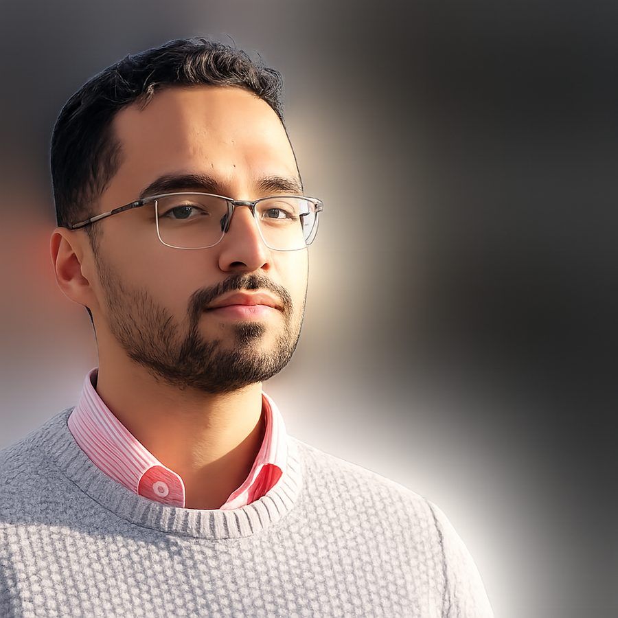
ERU Teaching Assistant → El Dabaa Nuclear Site → IHE Delft → UNESCO Cairo → Johns Hopkins
12+ countries, 5 ministries, €1M+ secured, conferences & field missions
380 innovators, national competition, 3 winning projects, 6-week bootcamp
Oases restoration & mangrove regeneration — Spain–Egypt Alliance 2025–2030
PhD work on flash-drought forecasting & irrigation salinity, plus the Zankalon forecast
Heritage-based solutions, Arab MAB, case studies across 12 countries
University Heritage Forum — 7 thematic conservation strategies, 85 participants
A Piedmont field day with Prof. Ciaran Harman: two rocks, one climate, two landscapes
PhD Student · Water Resources & Remote Sensing · Baltimore, MD & Cairo
In 2018, I graduated ranked 1st in my cohort from the Egyptian Russian University with a BSc in Construction Engineering and a GPA of 3.93/4.00. The path forward seemed clear: build things that matter, at the highest possible level.
But before the construction sites, there were four years in the classroom — not as a student, but as a Teaching Assistant. I designed curriculum for 120+ students annually across Engineering Hydrology, Sanitary Engineering, Water Resources Management, and Project Management. I organized three national workshops on sustainable water management for 200+ stakeholders. I introduced GIS tools into modules that had never used them. The classroom taught me how to translate complexity into clarity — a skill that has defined every role since.
"Technical precision without cultural and environmental grounding is not engineering. It is just construction."
In 2022, I joined Hassan Allam Construction as a Project Engineer at the El Dabaa Nuclear Power Plant — one of Africa's largest active infrastructure programs on Egypt's Mediterranean coast. I managed critical water supply and firefighting infrastructure for 174+ buildings, coordinated 5 multinational stakeholders, and achieved a 15% reduction in cost overruns. But the Mediterranean basin asked me questions that the construction site could not answer.
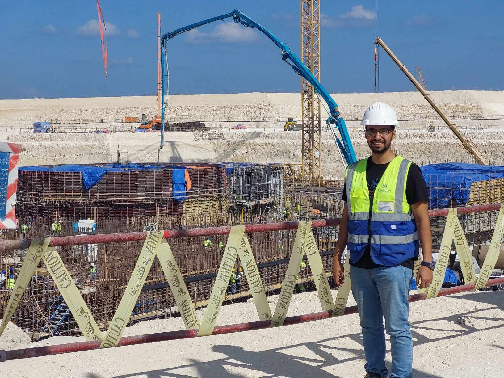
Africa\'s largest active infrastructure program. Upload dabaa.jpg to display.
Construction Engineering. Teaching Assistant 2018–2022 for 120+ students annually across 4 courses. 3 national workshops organized. First publications in self-healing bacterial concrete.
Critical water infrastructure for Africa's largest nuclear project. 15% reduction in cost overruns. 5 multinational stakeholders coordinated. The Mediterranean basin raises the question that redirects a career.
MSc at IHE Delft, then UNESCO's Regional Office for Egypt & Sudan: €1M in AECID climate adaptation funding, a 12-country expert group, and the WEFE+C competition. Since Nov 2026, consultant to Wageningen University on the FAO WaPOR Egypt project.
PhD in Environmental Health and Engineering with Prof. Venkataraman Lakshmi. Working on flash-drought forecast skill and on sensing irrigation water salinity from space.
Two research threads: (1) how the quality of the initial soil-moisture state limits 2–4 week flash-drought forecast skill, and (2) the detection limits of radar–thermal fusion for sensing irrigation water salinity in California's San Joaquin Valley. Both were submitted as abstracts to AGU Fall Meeting 2026.
Teaching Assistant 2018–2022 for 120+ students annually across Engineering Hydrology, Sanitary Engineering, Water Resources Management, and Project Management — achieving a 10% improvement in exam pass rates. Developed new curriculum integrating applied GIS tools and real-world case studies. Organized 3 national workshops for 200+ stakeholders on sustainable water management and climate resilience. Research publications in self-healing bacterial concrete introduced the idea of systems that regenerate rather than just resist.
Developed predictive ML models using WaPOR v2 satellite AETI data and AgERA5 climate reanalysis, trained against a 23-model CMIP6 ensemble. Produced crop-specific water consumption projections for six major crops under SSP2-4.5 and SSP5-8.5 through 2099. Nine ML algorithm types evaluated; Random Forest, SVR, and Ridge selected as best performers. Findings submitted for peer-reviewed publication (2026). Interdisciplinary Grenoble project: co-developed multi-stakeholder reservoir operation models with Grenoble Water Reservoir Authority.
My time at IHE Delft was not just about the thesis. It was about becoming part of a global water community — and contributing to it.
Elected Vice Leader of the IHE Delft Student Board. Organized institute-wide events, debates, and interdisciplinary exchange programmes for the global student body.
Selected to represent IHE Delft at World Water Week 2024 in Stockholm — the world's leading annual water conference. Participated in sessions on climate adaptation, food-water nexus, and the future of water education.
Delivered the graduation speech on behalf of the graduating cohort, focusing on the right of every child to food and water security. A message connecting scientific training to universal human obligation.
▶ Watch the Speech →Research internship at AgroParisTech Montpellier, France. Focused on agricultural water use optimization and the intersection of agronomy with hydrological modeling.
Co-developed reservoir operation models integrating ecological flow targets, irrigation, hydropower, and recreational objectives. Facilitated structured stakeholder interviews and co-design workshops to strengthen social legitimacy of management plans.
Participated in discussions at WHO75 (75th Anniversary of the World Health Organization) and debates at the WMO Headquarters in Geneva — engaging with global policy on the intersection of water, health, and climate at the highest institutional level.
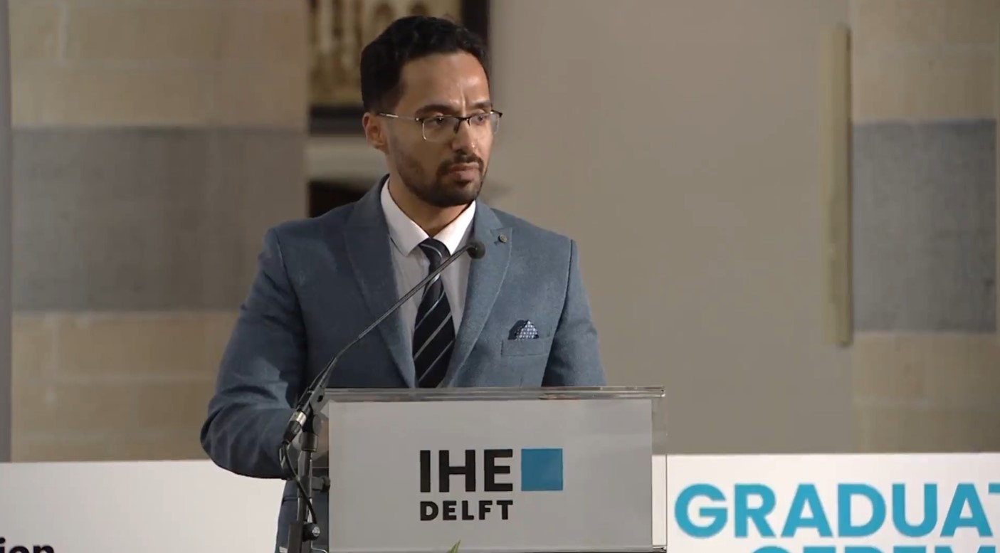
Upload graduation_speech.jpg
Upload ihe_wwweek.jpg
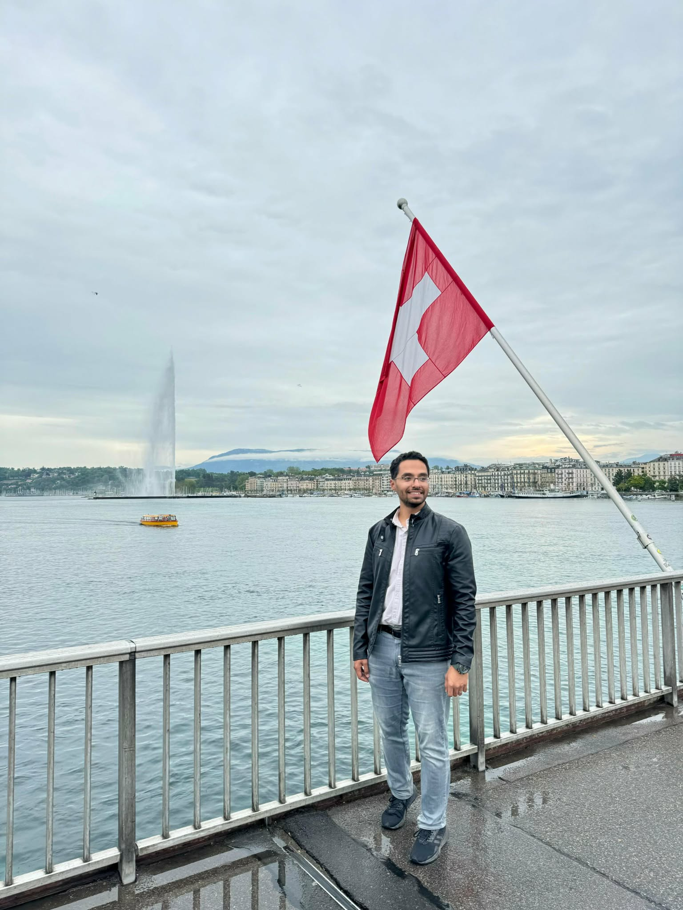
Upload ihe_events.jpg
Navigate to any section
The journey from IHE Delft to UNESCO Cairo began at Cairo Water Week 2024, where I met Director Nuria Sanz and joined immediately to develop what would become the WEFE+C Competition. The Arab world's ancient water and land management wisdom is not nostalgic heritage — it is actionable, scientifically validated climate adaptation technology.
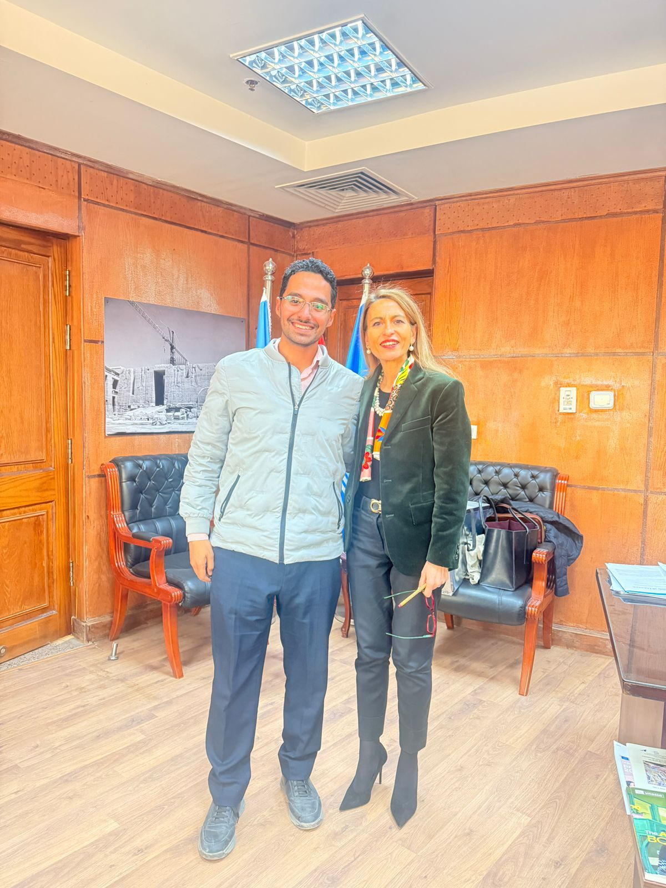
Cairo Water Week 2024. Upload minister_meeting.jpg or dr_sanz_cww.jpg
€1M in AECID funding secured for oasis restoration and mangrove regeneration as part of the Spain–Egypt Alliance.
Designed and ran the WEFE+C Trail in Motion, engaging 380+ innovators from universities across Egypt.
Field missions to Siwa, Fayoum, New Valley, and Wadi El Gemal — bridging Traditional Ecological Knowledge with modern hydrology.
GIS analysis for Historic Cairo's Conservation Plan. 12-country Expert Group on Groundwater in Drylands.
From satellite technology conferences to expert group meetings on ancient oases — a year of moving between science, policy, and community.
Met Director Nuria Sanz at CWW 2024. Joined UNESCO immediately afterward to develop the WEFE+C Trail in Motion Competition. Also represented UNESCO in joint sessions with FAO and Wageningen University & Research, exploring how WaPOR data tools can make agricultural water management more efficient. Moderated one of FAO's WaPOR sessions.
View on LinkedIn →Represented UNESCO at the EgSA NewSpace Africa Conference. Explored cutting-edge satellite technology, cloud-based analytics, and how space-derived data is reshaping agriculture and water management across Africa. The ability to monitor water resources with satellite precision at the scale of individual farms represents a paradigm shift in how we approach food security.
View on LinkedIn →Represented the UNESCO Cairo Regional Office at the WEFE Nexus in Egypt and MENA Region Conference organized by SureNexus and Participatory Development Solutions. Spoke on the panel on Governance and Integrated Policy Planning — addressing how policy fragmentation across water, energy, food, and ecosystem sectors undermines climate resilience.
View on LinkedIn →Delivered a series of public seminars introducing the WEFE+C framework — Water, Energy, Food, Ecosystems, and Culture — to engineering, agriculture, and science faculties nationwide. Introduced Culture as the fifth, mandatory pillar and launched the partnership with MADKOUR Group to bridge innovations to real-world industrial scale.
View on LinkedIn →Hosted and led the 12-country Expert Group Meeting on Managing Groundwater and Dependent Ecosystems in Drylands at UNESCO Cairo. A paradigm-shifting dialogue: oases reframed not as fragile problems but as sophisticated living models of resilience. As Dr. Pietro Laureano stated: "The model is the oasis. This is why we have to preserve oasis, because it's a model for the future." Dr. Bisher Imam grounded the discussions: "If we are not talking about our failure… we are not going to learn from it."
View on LinkedIn →Coordinated a landmark meeting bringing together Biosphere Reserve managers, Geopark experts, and conservation scientists from across the Arab region. Director Nuria Sanz set the tone: "We are not at the center of problems, but at the center of solutions." The meeting explored how Biosphere Reserves function as resilient models for climate action, and how Geoparks should be reframed as "natural infrastructure — an investment-worthy climate asset."
View on LinkedIn →Represented UNESCO at the launch of Egypt's National Workshop for the Convergence Initiative. H.E. Prof. Khaled Abdel-Ghaffar and UN Resident Coordinator Elena Panova spoke with a unified voice on tackling the intersection of food systems, climate change, and health. UNESCO contributed expertise on the critical link between water security and food systems.
View on LinkedIn →Led two landmark UNESCO field missions. In Fayoum: witnessed the seamless integration of heritage farming and cutting-edge research — from 4,000-year-old basin-irrigated fig orchards to nano-selenium supplements on heat-stressed chicks. In New Valley: four days that challenged every assumption about heritage and development. Hag Saad, 85 years old, described water that once flowed at 50 meters now requiring drilling to 750 — while adapting through "knowledge by sight" accumulated over a lifetime.
Fayoum Mission → New Valley Mission →Led and coordinated the two-day final evaluation event (Aug 28–29) at UNESCO Cairo. 19 finalist teams presented under the "Dossier-First" methodology: 15 minutes presentation + rigorous cross-examination. Selected the three winning projects that entered the 6-week mentorship bootcamp. Also served as Judge at the AI Hackathon for Waterpreneurs, organized with the ACG and the European Commission in Egypt, alongside Dr. Ayman Ayad.
View on LinkedIn →Represented UNESCO at Cairo Water Week 2025, celebrating 50 years of the International Hydrological Programme. Showcased WEFE+C winning projects — Cultivania (Siwa), Loopet (Fayoum), and Smart Hydroponics (Kharga) — to international policymakers and donors. The Cultivania team was in active pilot development phase ahead of presenting to international investors.
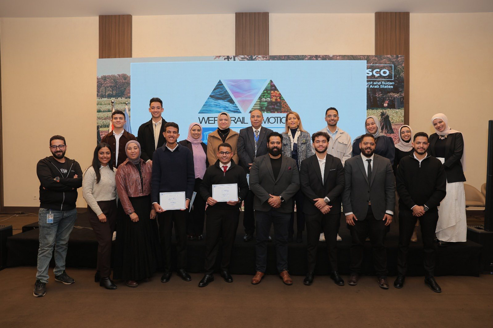
Upload wefe_awards.jpg
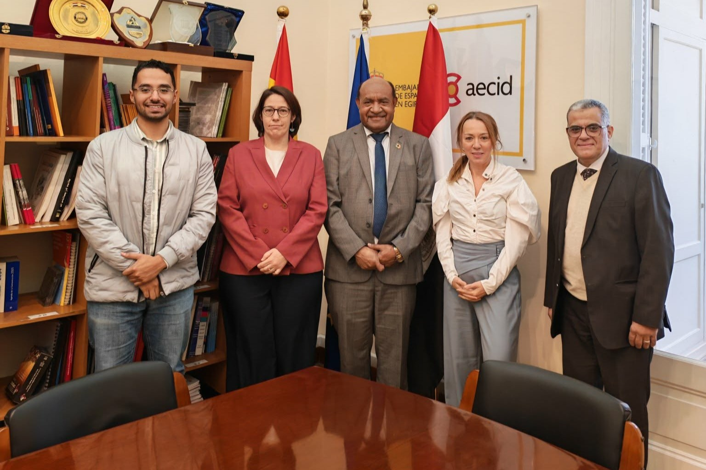
Upload aecid_signing.jpg
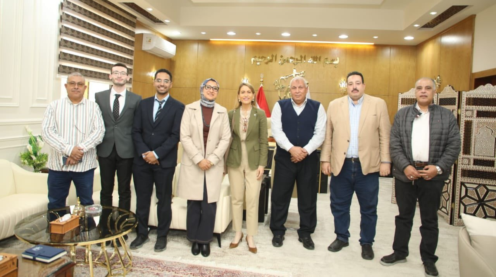
Upload governor_meeting.jpg
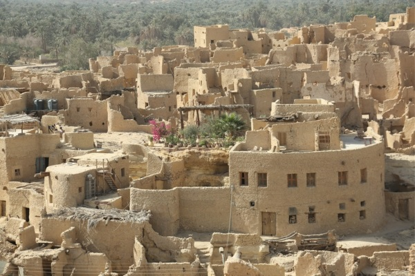
Upload siwa_site_visit.jpg
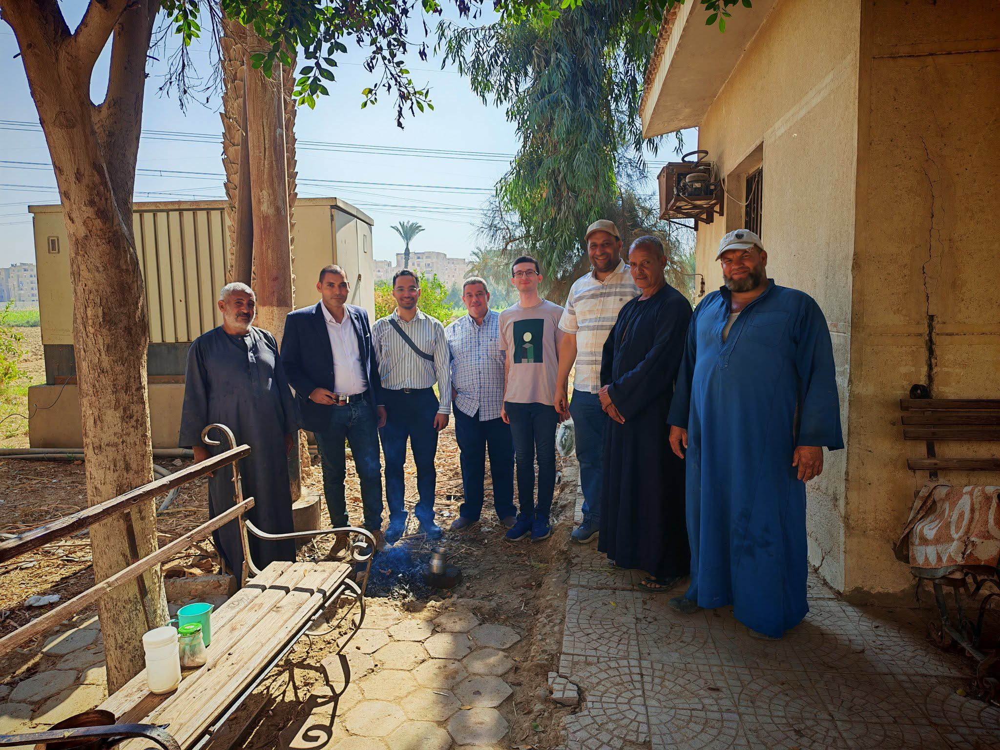
Upload fayoum_mission.jpg
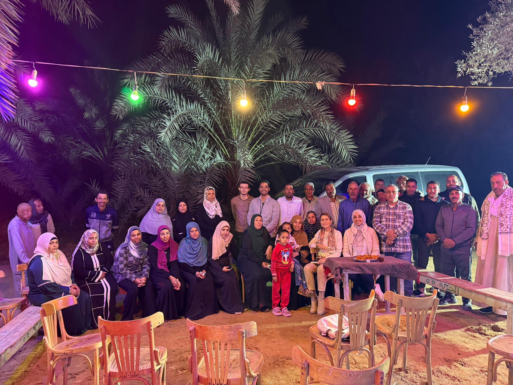
Upload ababda_community.jpg
Navigate to any section
I designed and ran this national competition to prove a belief: Egypt's oases are not problems waiting for outside solutions — they are living laboratories where the pressure of the WEFE Nexus is most acute and where communities already hold the most relevant knowledge.
The WEFE Trail in Motion added a fifth, mandatory pillar to the standard Water-Energy-Food-Ecosystem framework:
National Call: Open call through Deans' offices of Engineering, Agriculture, and Science faculties nationally. 13k+ impressions, 1000+ reactions.
Capacity Building: "WEFE+C In-Depth" webinar (June 12, 2025) — 3.5 hours of live training. 250+ participants.
Technical Screening: 140 formal applications reviewed. Multi-stage funnel reduced field to 19 finalists. Scoring: Technical Innovation (30%), Scalability (25%), Economic Viability (20%), Ecosystem & Social Impact (15%), Pitch Clarity (10%) + Cultural Bonus (+10pts).
Final Evaluation: Two-day event at UNESCO Cairo (Aug 28–29, 2025). "Dossier-First" methodology. Each team: 15 minutes + rigorous cross-examination.
Mentorship Bootcamp: Winners entered a 6-week intensive programme transforming concepts into fundable Project Documents.
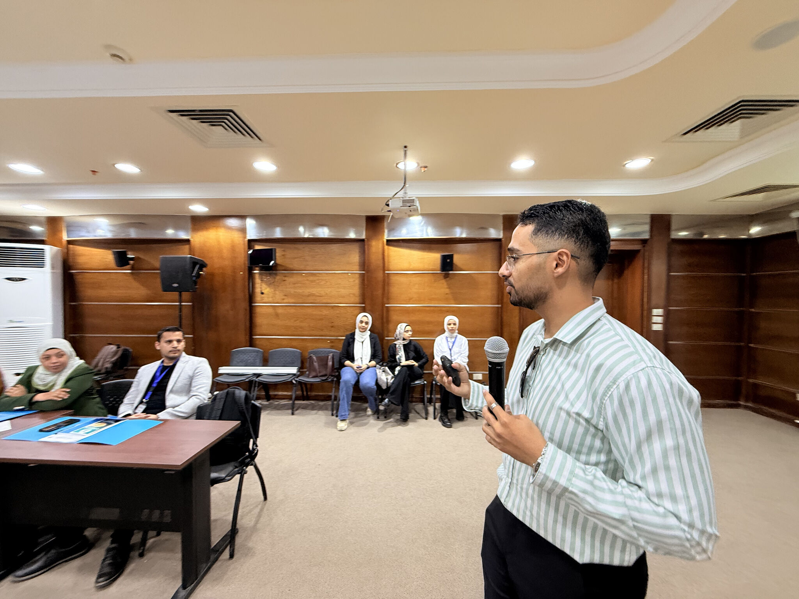
Upload wefe_evaluation.jpg
Upload wefe_awards.jpg
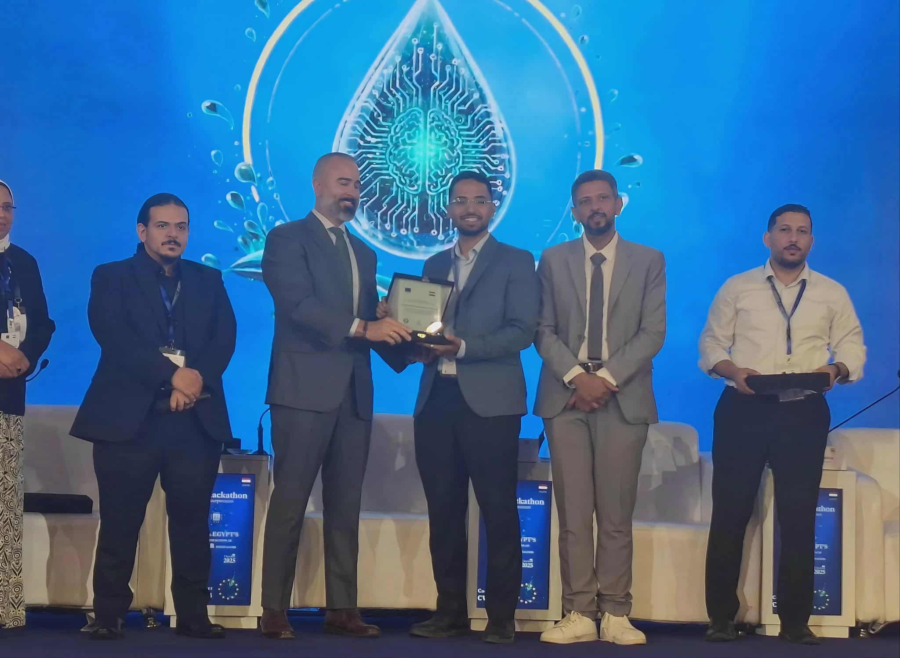
Upload eu_hackathon.jpg
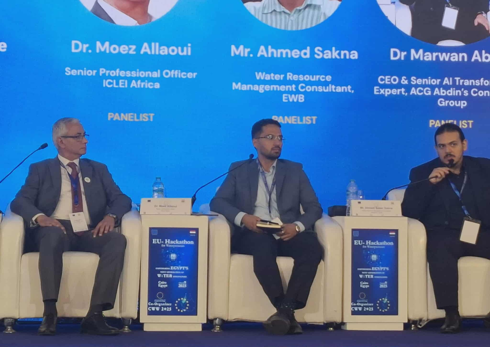
Upload cairo_water_week.jpg
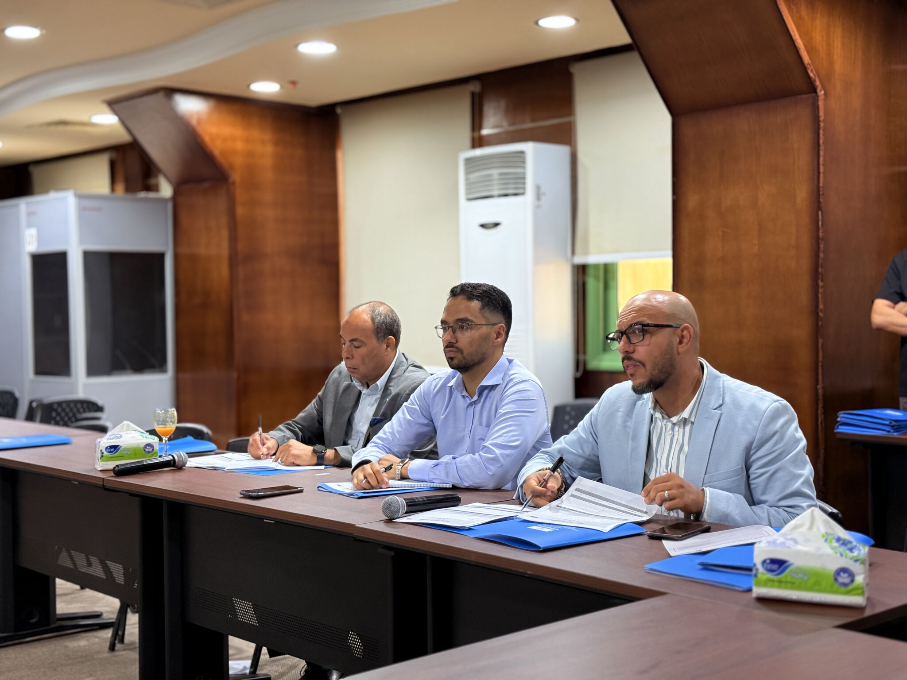
Upload wefe_team.jpg
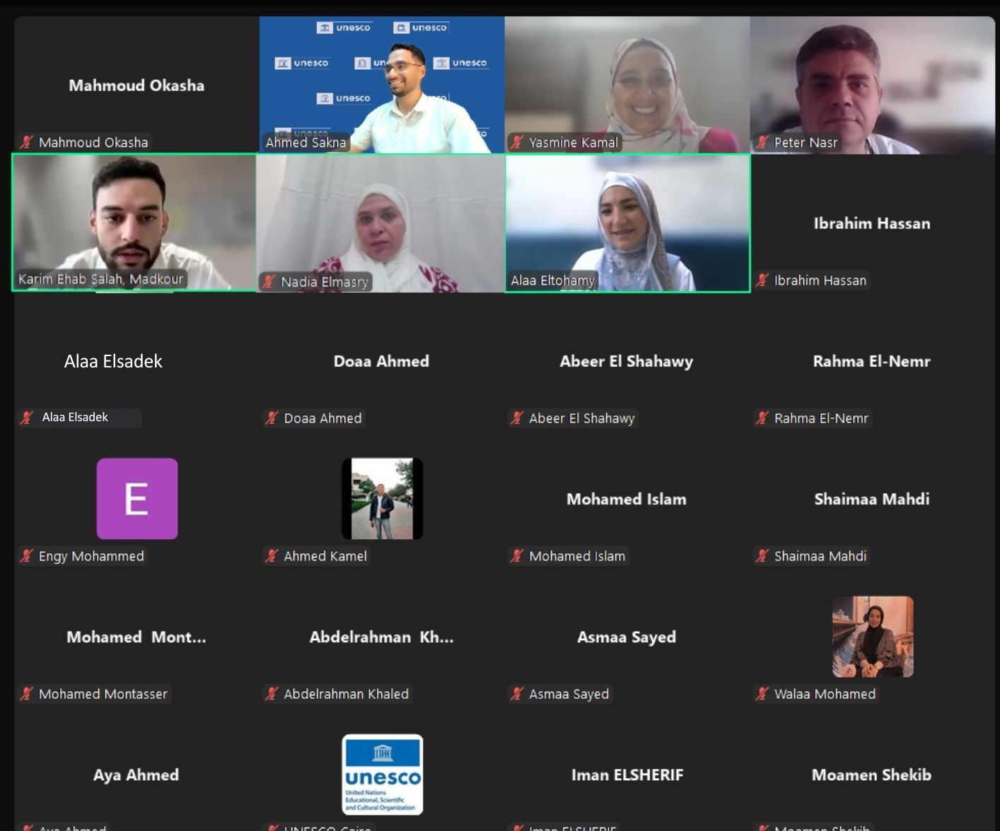
Upload wefe_webinar.jpg
Decentralized solar-powered Reverse Osmosis units treat brackish agricultural drainage water. Treated water irrigates salt-tolerant heritage crops and supports aquaculture in the Gambi Depression. Co-designed with local farmers. Currently in pilot development phase ahead of Cairo Water Week 2026.
A circular bio-economy model targeting Lake Qarun's ecological crisis. AI-optimized bioconversion process transforms massive poultry industry runoff into high-quality aquaculture feed — processing units powered by self-cleaning solar panels.
Solar-powered closed-loop hydroponics achieving 90% water savings. IoT sensors and a mobile app democratize high-efficiency farming, making it accessible for low-income households and youth entrepreneurs.
In September 2025, King Felipe VI and President El-Sisi signed the Spain–Egypt Alliance for Sustainable Development (2025–2030). Both projects below are its direct operational expression, co-developed by Ahmed Sakna as Project Specialist at UNESCO Cairo. Together they demonstrate a single thesis: conservation pays for itself when heritage, science, and community are treated as a unified system.
The Situation: Our Forensic Agrarian Review documented a "Phenological Shift" — climate change is physically altering the seasonal cycles and harvest dates of staple crops. Fossil aquifers are depleting at rates 3–5x faster than recharge. The ancestral "Knowledge by Sight" — intricate unwritten methods of managing scarce water — is dying with the elder generation.
2–3 traditional wells rehabilitated, 2 sand dams + recharge trench. 3ha of gravity-fed drip irrigation — eliminating diesel pumps.
Ancient "Fallow Irrigation" revived alongside intercropping of date palms with legumes, moringa, and henna. Bio-polymers bridging 4,000-year-old technique with 21st-century materials science.
8ha of salt-tolerant heritage crops, 150 agroforestry windbreak trees, 2 wetland strips for natural filtration and ecosystem recovery.
Historic 1960s Administrative Complex restored as School of Traditional Crafts. Local youth trained as heritage geo-tourism guides.
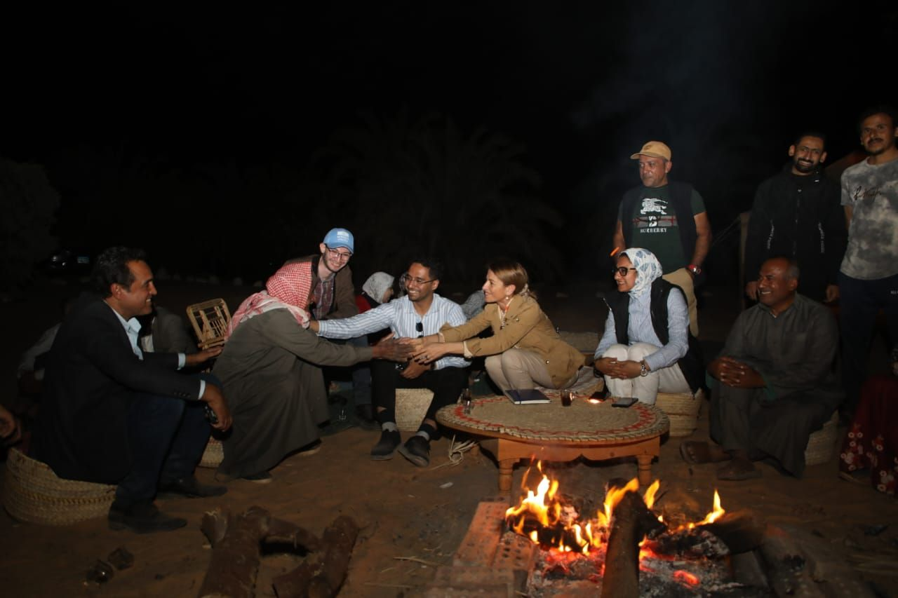
Upload new_valley_wells.jpg
Upload siwa_site_visit.jpg
The Situation: A devastating 30% decline in Red Sea mangrove cover, driven by rapid urbanization, unregulated camel overgrazing, and climate change. Past restoration initiatives failed because they relied on guesswork — ignoring local hydrology and excluding the Ababda Bedouin who hold 20 years of unpublished ecological knowledge.
Restore 20km of coastline with 20,000 mangrove trees. Planting zones dictated by 40 years of Egyptian Space Agency satellite baselines (1985–2025).
Camel-proof fencing around every planting zone. Restore degraded tidal channels to reinstate correct hydrological flow — the critical condition past projects ignored.
Formal vocational training for 60 local youth and women in sustainable fisheries, mangrove nursery operations, and eco-tourism guiding.
Continuous NDVI Vegetation Index analysis via EgSA satellite imagery. Project culminates in a peer-reviewed Mangrove Restoration Model.
Upload ababda_community.jpg
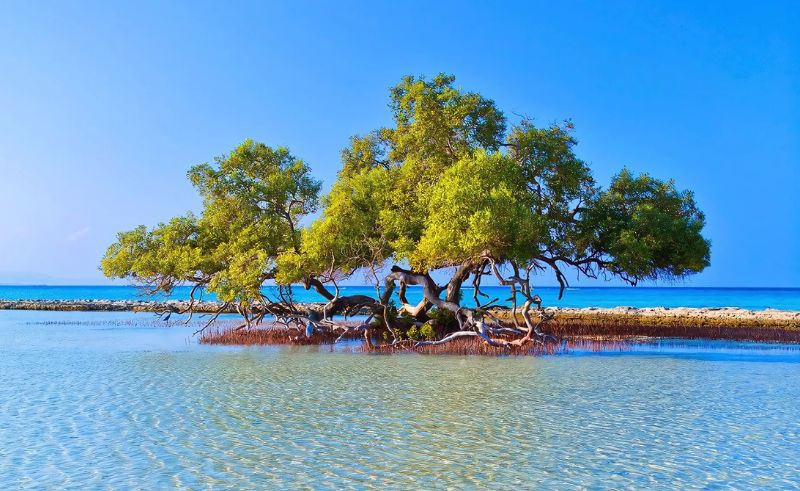
Upload mangrove_site.jpg
At Johns Hopkins I work with Prof. Venkataraman Lakshmi on satellite-based hydrology and terrestrial water storage. My current projects are about the limits of what we can see from space, and of what we can forecast from it.
Flash droughts develop over weeks, which leaves little time to act. This project asks how much the quality of the initial soil-moisture state limits 2–4 week flash-drought forecast skill.
Can satellites detect the quality of irrigation water, not just its quantity? I am testing the detection limits of combining radar and thermal observations to sense irrigation water salinity in California's San Joaquin Valley.
As local consultant to WUR on the FAO WaPOR Egypt project, I assess satellite-derived irrigation performance across Nile Delta pilot sites. I built a multi-site Python/Earth Engine difference-in-differences pipeline, wrote the master technical report and the D1.1/D1.2 literature review, and lead learning sessions for Egyptian water-sector partners.
My MSc thesis produced a counterintuitive finding that challenges standard assumptions about how climate warming affects crop water demand — and revealed that national land-use policy, not climate change itself, is the dominant driver of Egypt's future agricultural water crisis.
Data: WaPOR v2 (30m resolution AETI, 2009–2023), AgERA5 climate reanalysis, ensemble of 23 CMIP6 General Circulation Models. Six major irrigated crops. Projections through 2099 under SSP2-4.5 and SSP5-8.5.
Method: Nine ML algorithm types evaluated per crop. Best performers: Random Forest (Orchards R²=0.863, Wheat R²=0.684), SVR (Rice R²=0.832, Grapes R²=0.677, Potato R²=0.766), Ridge Regression (Clover R²=0.770).
Counter-intuitive finding 1: Winter crops (wheat, clover) show INCREASING water demand (+5.3–6.6% by 2099). Warmer winters increase evaporative demand during the cool growing season.
Counter-intuitive finding 2: Summer crops (rice, grapes) show DECREASING water demand (−4.7% to −6.3%). Driven by projected changes in humidity and radiation balance during peak summer months.
Policy finding: Agricultural expansion will drive a +13.5% total CWR increase by 2050 vs. +3.6% from climate change alone. National land-use policy is the critical lever.
Egypt faces an existing annual water deficit of 13.5 billion m³. The crops most planned for national expansion — wheat and orchards — are precisely those projected to need the most water under climate change. Policy is the lever that matters most.
Sakna, A.S., & Lakshmi, V. "Initial soil-moisture state quality and flash-drought forecast predictability." AGU Fall Meeting 2026.
Sakna, A.S., & Lakshmi, V. "Satellite detection limits for irrigation water quality via radar–thermal fusion." AGU Fall Meeting 2026.
Sakna, A., Mul, M., Tran, B., & Seyoum, S. "Assessing the impact of climate change on agricultural water consumption using earth observations and machine learning: a case study of Zankalon, Nile Delta, Egypt." Journal of Hydrology (under review).
→ Code & data: github.com/sadow999/IHE-ThesisAbdelal, Q., Al-Kilani, M.R., Al-Bakri, J., Keblouti, M., & Sakna, A. "Reduced Frequency of Soil Moisture Measurements for Cost-effective Irrigation Management in Arid Regions." Journal of Agrometeorology, 28(1), 100–103.
doi:10.54386/jam.v28i1.3254 →Galishnikova, V.V., Elroba, S.M., Dayoub, N., & Sakna, A. "Use of natural compounds as nutrition for bacteria in self-healing mortar." Structural Mechanics of Engineering Constructions and Buildings, 18(1), 54–63.
doi:10.22363/1815-5235-2022-18-1-54-63 →Galishnikova, V.V., Elroba, S.M., Mahadi, M.I.A., Dayoub, N., Sakna, A., & Fakhratov, M.A. "Bacteria-Based concrete crack healing: A review." AIP Conference Proceedings, 2559, 050010.
doi:10.1063/5.0099031 →Galishnikova, V.V., Elroba, S.H., Nassar, M., & Sakna, A. "Self-healing bacterial mortar with calcium lactate and improved properties." Magazine of Civil Engineering, 105(5), Article No. 10503.
doi:10.34910/MCE.105.3 →The publications and policy work at UNESCO Cairo are grounded in a single paradigm shift: oases are not merely natural systems requiring technical interventions. They are heritage-based solutions — socio-ecological systems where cultural practices, traditional knowledge, and social structures are as integral to ecological function as hydrology itself.
Linguistic diversity in oasis communities directly correlates with agrobiodiversity. The Siwi Amazigh language contains precise terminology for traditional cultivation techniques and water management practices that have maintained date palm genetic diversity for centuries. When the language erodes, the knowledge erodes — and the ecosystem erodes with it. The loss of traditional knowledge is as direct a threat to oasis sustainability as aquifer depletion.
This framework was developed through three field missions: to Fayoum University's Faculty of Agriculture, to Siwa Oasis, and to New Valley Governorate — then validated through the 12-country Expert Group Meeting on Managing Groundwater and Dependent Ecosystems in Drylands, hosted at UNESCO Cairo in June 2025.
Strategic Framework: Four Pillars
Context-specific hybrid approaches combining modern engineering with traditional Aflaj, Qanats, and Khettaras.
A regional typology of oases by hydrogeological, socio-economic, and developmental characteristics — enabling targeted planning.
Community empowerment as the primary driver. Communities are active experts whose knowledge is primary data.
Technology complements rather than replaces traditional wisdom. Remote sensing serves as an amplifier, not a substitute.
Five Documented Case Studies
Technical success + governance failure = system collapse. Waterlogging returned when enforcement ended.
Top-down restoration without community agency: only 10% of original wetland area restored.
2,500-year-old gravity-flow systems persist precisely where traditional social institutions managing them remain intact.
Strong legal framework + community "groundwater contracts" + smart metering = measurable aquifer improvement.
State-led expansion since the 1960s has depleted the non-renewable Nubian Sandstone Aquifer without local management plans.
These maps were produced for the UNESCO publication "Biosphere Reserves and Geoparks in the Arab World: Long Lasting Resilience" (2025). Hover to see them come alive — click to expand.
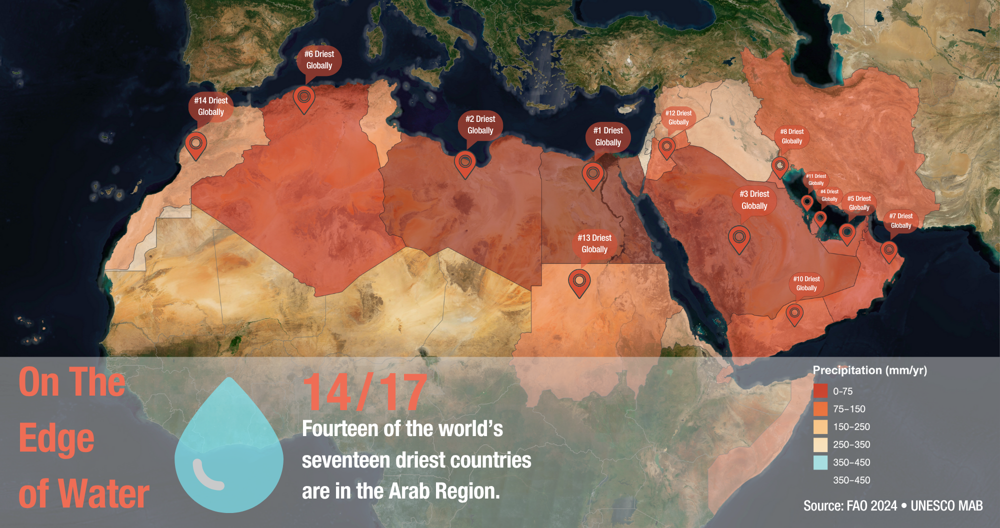
14 of the world's 17 most water-stressed countries are in the Arab Region. This map does not tell a story of weakness — it documents the severity of the challenge that produced humanity's most sophisticated water knowledge.
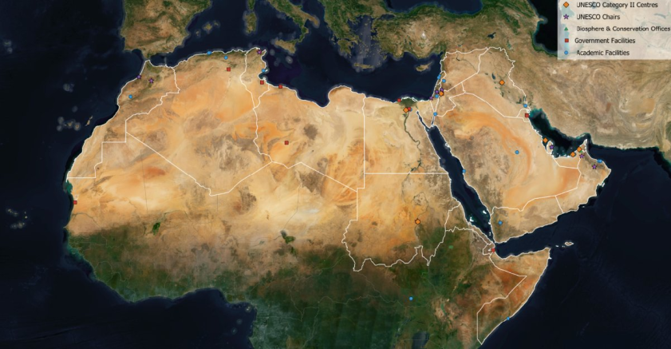
Category II Centres, UNESCO Chairs, Biosphere & Conservation Offices, and Academic Facilities mapped across 22 Arab states.

The region hosts world-class research centres in water science, climate modelling, and biodiversity. KAUST leads with 15,200 relevant publications (2015–2025).

High-resolution satellite base revealing the geographic logic of where conservation infrastructure and natural heritage coincide.

Every UNESCO Biosphere Reserve and Global Geopark in the Arab region — from Morocco's cedar forests to the Red Sea coral reefs and the dragon blood forests of Socotra.
The UHF bridges 8 universities, the Ministry of Tourism & Antiquities, and Cairo Governorate to develop interdisciplinary conservation strategies for Historic Cairo — a UNESCO World Heritage Site since 1979. Over 85 participants produced 7 technical reports directly informing the Conservation & Management Plan. My role: GIS map production, technical documentation, and programme coordination.
Digital Twin of the Mohamed Ali Mosque using Autodesk Revit and Unreal Engine. Predictive maintenance scheduling and solar energy integration simulations.
Urban agriculture, water-sensitive design, rooftop gardens, and reintroduction of historically relevant plant species through participatory landscape planning.
Immersive heritage trails, creative economy clusters, and a proposed visitor centre in Muhib El-Din Hall. Strategic linking of traditional craft industries with cultural tourism.
Adaptive reuse strategies. Innovative financing mechanisms: microfinance schemes, heritage bonds, and eco-transport solutions. Khayer Bek dark tourism VR.
Meticulous documentation of 25+ monuments in the Mamluk Cemetery using a quantitative risk-based prioritization model assigning urgency scores.
Comprehensive climate hazard mapping. Groundwater management protocols, early-warning systems for flooding and subsidence, social well-being indicators embedded alongside monument protection targets.
Crafts, storytelling, and Mawlid practices comprehensively mapped and georeferenced. Community Management Plan proposes repurposing Sabil-Kuttabs as cultural hubs.
Each map was produced in support of the Conservation and Management Plan for Historic Cairo.
Case Studies — Historic Cairo
PDF · Overview MapCore & Buffer Zones 2008
PDF · Boundary MapTheme 1 — Zero-Energy Citadel
PDF · Thematic MapTheme 2 — Green Infrastructure
PDF · Thematic MapTheme 3 — Cultural Economy (A)
PDF · Thematic MapTheme 3 — Cultural Economy (B)
PDF · Thematic MapTheme 4 — Urban Finance
PDF · Thematic MapTheme 5 — Documentation
PDF · Thematic MapTheme 6 — Climate Hazards
PDF · Thematic MapTheme 7 — Living Heritage
PDF · Thematic MapPhD Student · Water Resources & Remote Sensing · Baltimore, MD & Cairo
A day in the field with Dr. Ciaran Harman (JHU Environmental Health & Engineering), walking two watersheds 16 km apart that share a climate and almost nothing else.
The trip started at Baisman Run and Pond Branch in Oregon Ridge Park, on the Loch Raven Schist, and ended at Soldiers Delight, on serpentinite: a slice of ancient ocean mantle pushed onto the continent. Both get about 1,150 mm of rain a year, and both are being lowered at about 2.4 m per million years.
What differs is the rock. That one difference decides how deep the critical zone goes, how much water the ground can store, how flashy the streams are, what the water tastes of, what grows, and what shape the hills take.
"Landscape morphology is an emergent property of the critical zone."
The field day's central idea, from the trip reader
Quartz-rich mica schist weathers into saprolite, "rotten rock" that keeps the rock's texture but crumbles in your hand. It forms a porous sponge 15–20 m thick under the ridges. Most of the rain soaks in and leaves slowly as base flow.
Serpentinite has almost no quartz, so it dissolves away rather than rotting in place. There is no saprolite: a thin silty soil sits right on hard rock. Rain saturates whole hillslopes quickly and the streams respond fast.
What we saw along the way, and the research behind each stop.
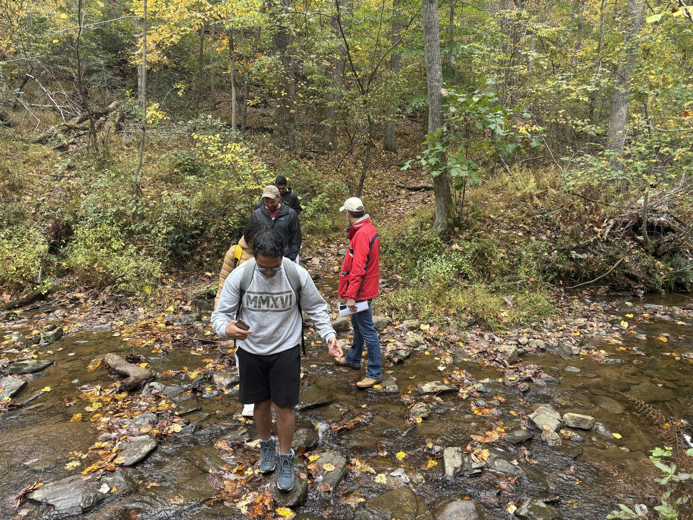
Baisman Run sits on the Fall Zone, where the hard Piedmont drops to the soft Coastal Plain. Ships could sail inland to the fall line and these steep streams powered mills, which is a large part of why Baltimore grew where it did. The streambed glitters with mica, and you can find red almandine garnet.
In the 1960s, M. Gordon "Reds" Wolman instrumented this stream and found that floods and sediment are decoupled. Sediment moves through the channel in fits and starts, and can leave months or years after the water that brought it.
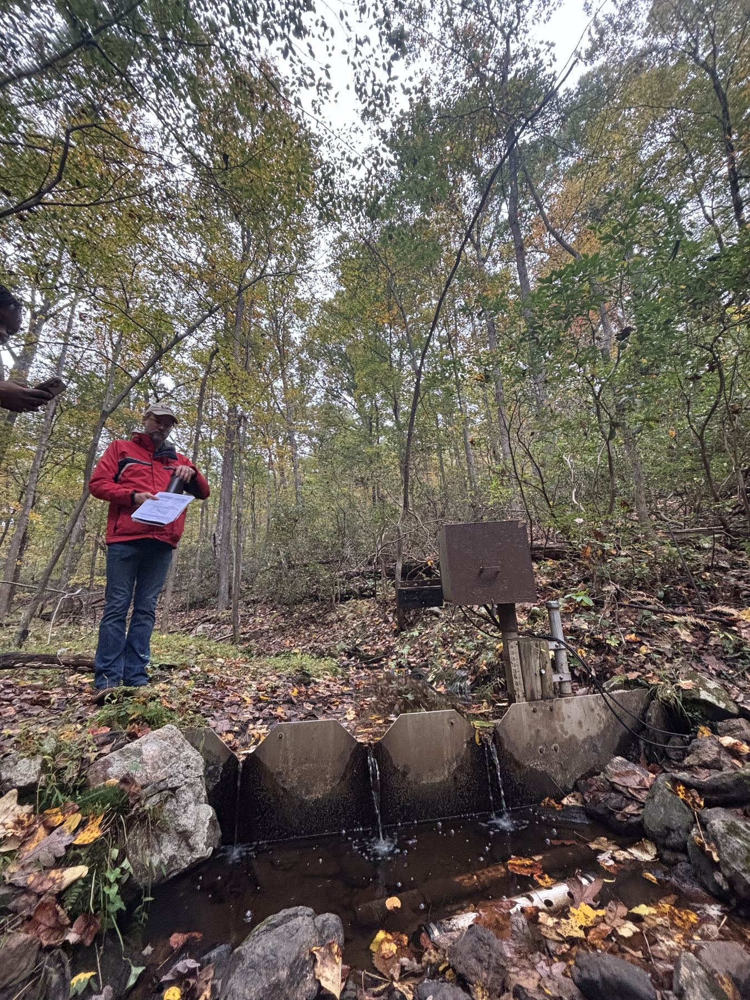
A small estate dam built around 1910 filled up with sediment. In the late 1960s, Cleaves, Godfrey and Bricker surveyed that trapped sediment and measured what the stream carried in solution. The result was one of the first complete geochemical mass balances of a watershed.
Their surprise: water was carrying away about 5× more rock in solution than as sediment. Chemical weathering was a major force in crystalline landscapes, not something that mattered only in limestone.
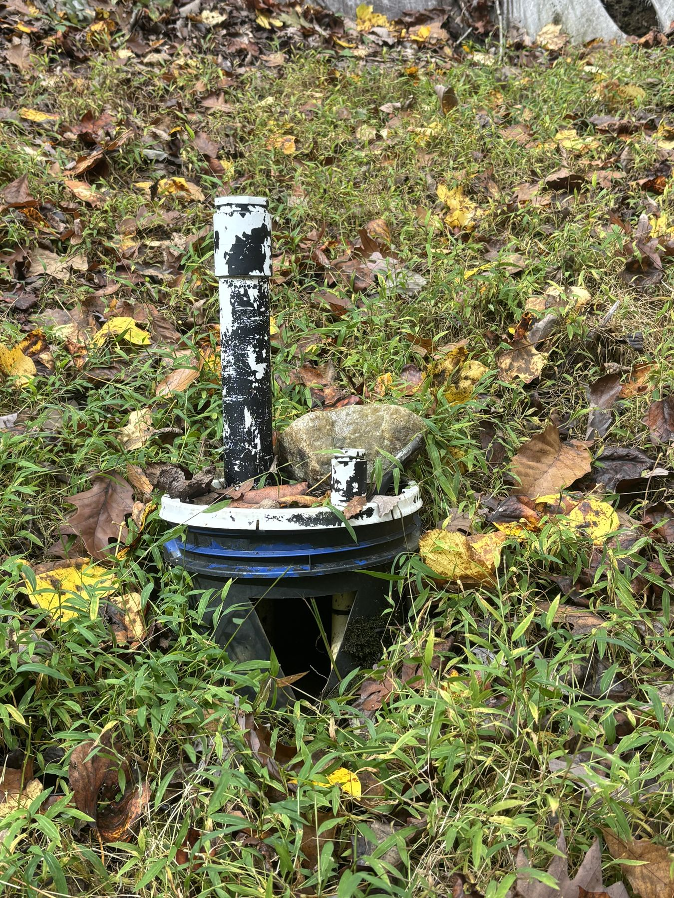
The flat riparian strip along the stream is only 3.7% of the 37-hectare Pond Branch catchment. Wells there show the water table within 10–20 cm of the surface all year, even in drought.
When it storms, the hillslopes soak up almost everything. More than 90% of storm quickflow can be explained by rain falling directly on that narrow strip. The hillslopes act like rechargeable batteries, releasing water through toe-slope seeps over hundreds of days.
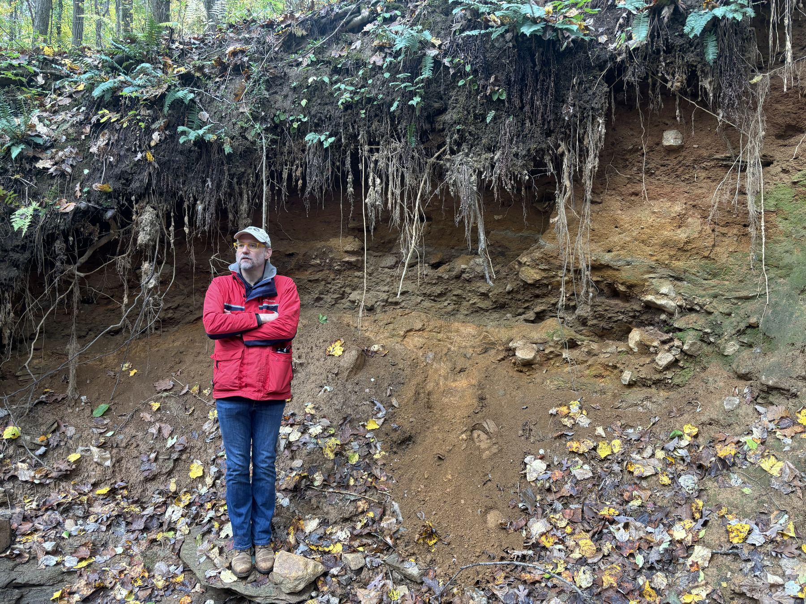
In the cutbank, the saprolite still shows the schist's banding and quartz lenses but crumbles to sand between your fingers. A 2019 borehole on the ridge went past 45 m without reaching fresh rock. Base flow after Baltimore's record-wet 2018 peaked a full year later, in 2019, because the water first had to percolate through about 10 m of unsaturated ground.
Seismic surveys found fresh rock just 2–10 m under the valley but about 40 m under the ridges, a "bow-tie" shape. Regional tectonic compression squeezes fractures shut under valleys, while under ridges they open up and let water weather the rock deeply.
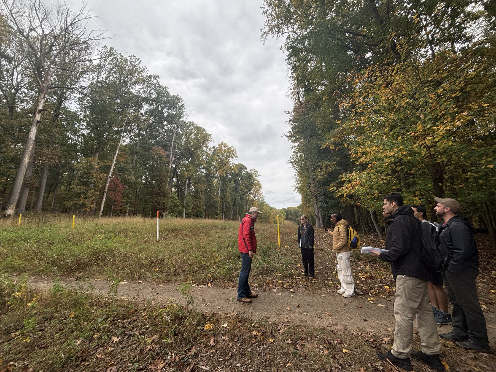
The forest hides a farming past: 18th-century tobacco clearing stripped soils and eroded about 5 cm from the uplands, and the valley bottoms are buried under post-settlement sediment.
Pond Branch keeps about 95% of the nitrogen it receives from the atmosphere. Small hollows only 10–20 cm deep, under 1% of the area, account for over 99% of denitrification. In midsummer they dry out, and nitrate is flushed into the stream.
Just 16 km west, the forest gives way to golden grass, stunted blackjack oak and Virginia pine. This is serpentinite: mantle rock that formed about 489 million years ago beneath the ancient Iapetus Ocean and was shoved onto North America. It is rich in magnetite, so a strong magnet sticks to it.
The soils are low in calcium and very high in nickel and chromium, which is why the vegetation is so sparse. The streams carry about eight times more dissolved solids than Pond Branch. Because the permeable layer is only about 0.46 m thick (versus about 4 m at Pond Branch), storms saturate entire hillslopes, and channels start much closer to the ridges. Litwin & Harman (2024) showed that subsurface transmissivity, not surface erodibility, is what halves hillslope length here.
Same climate and same base-level lowering (~2.4 m per million years). Everything else follows from the rock.
| Pond Branch & Baisman Run | Soldiers Delight & Druids Run | |
|---|---|---|
| Bedrock | Loch Raven Schist (40–50% quartz) | Antigorite serpentinite (no quartz) |
| Critical-zone depth | ~15 m saprolite; fractured rock >45 m | Soil ≤1 m; bedrock at 1–3 m |
| Weathering | Rots in place to clay and quartz; ~50% chemical | Dissolves almost completely; ~90% chemical |
| Stream chemistry | 25 mg/L dissolved solids, Na-Ca-HCO₃ | 205 mg/L dissolved solids, Mg-HCO₃ |
| Base flow share | ~85–87% of annual runoff | ~63% of annual runoff |
| Storm response | Damped; runoff from a 3.7% riparian fringe | Flashy; saturation spreads across hillslopes |
| Quickflow exponent (Qf ∝ Pa) | a = 1.89 | a = 3.17 |
| Permeable layer | ~4 m thick, T ≈ 3.9 m²/d | ~0.46 m thick, T ≈ 1.1 m²/d |
| Hillslope length | Median 177 m | Median 88 m |
| Vegetation | Closed deciduous forest | Serpentine grassland & oak savanna |
My PhD work uses satellites to track soil moisture and terrestrial water storage. This field day was a reminder of what sits underneath those pixels. At Pond Branch, a wet year shows up in the stream a year later. Sulfate in base flow is still at its 1968 level even though acid-rain deposition has dropped more than threefold, because the deep saprolite stores and slowly releases it.
At Soldiers Delight, with storage measured in days to weeks, the same signal would pass through almost at once. Two places with the same rain can need very different models of memory, and that matters for anything we try to forecast from space.
1. Below-ground storage capacity, not surface erosion, sets how finely a landscape is dissected.
2. A thin riparian strip can generate most of a catchment's storm runoff.
3. Deep critical zones carry multi-year and multi-decade memory of what fell on them.
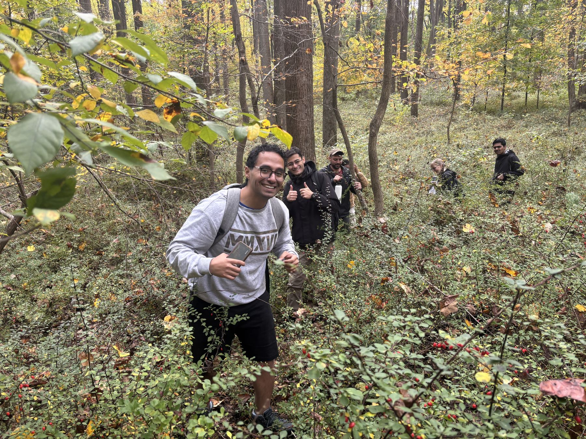
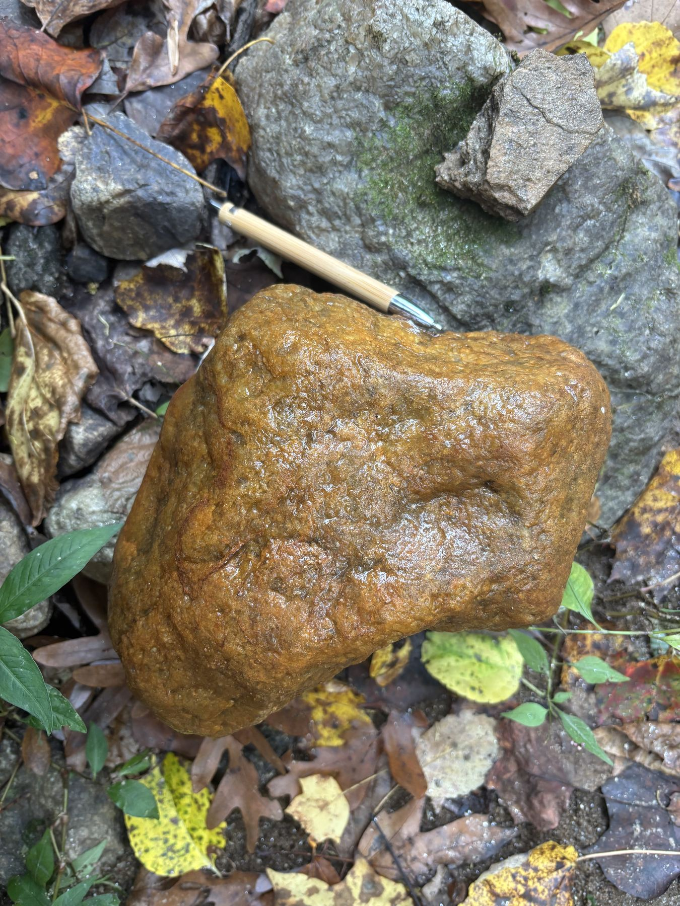
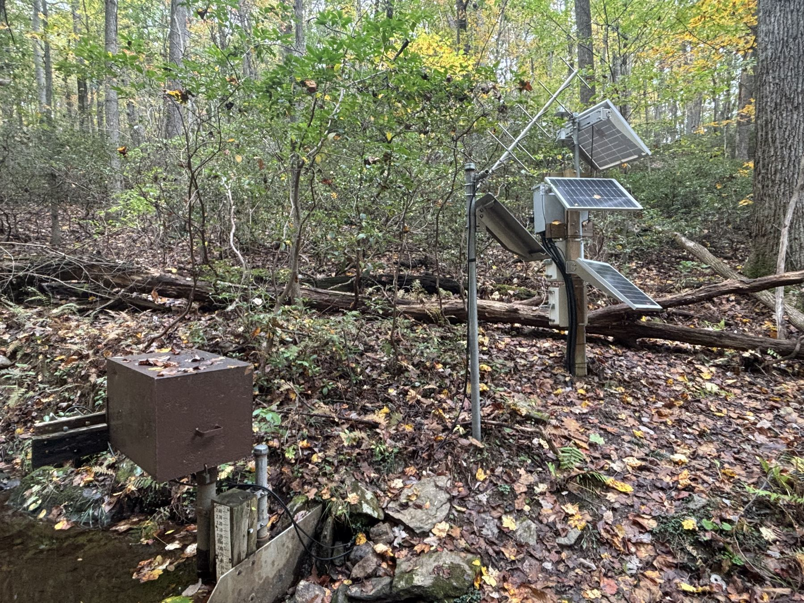
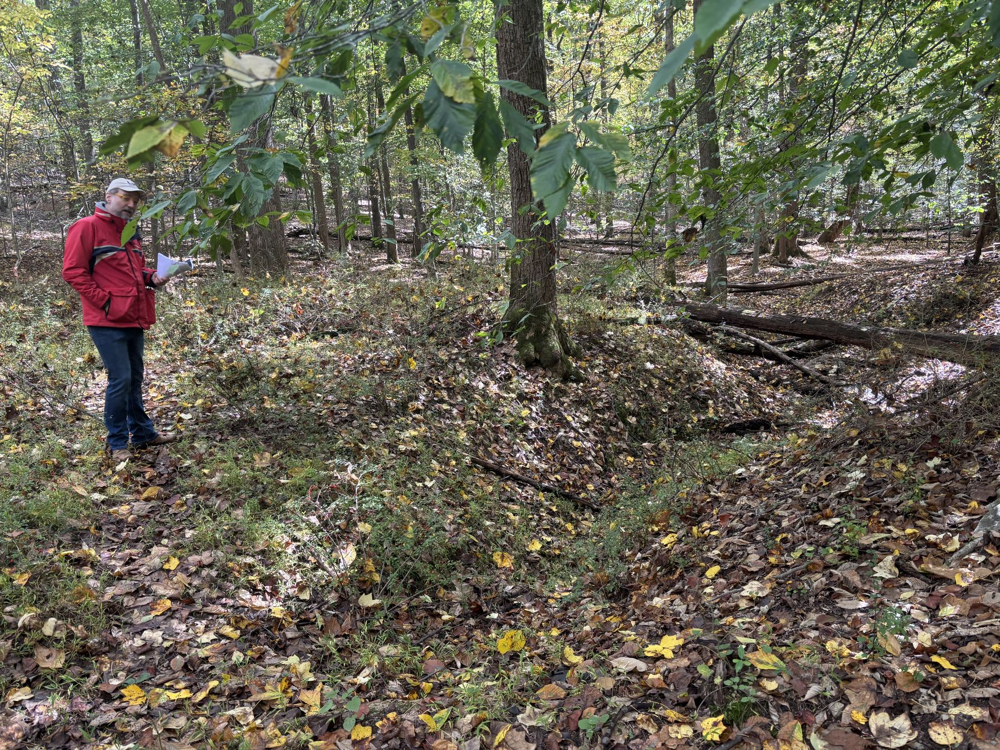
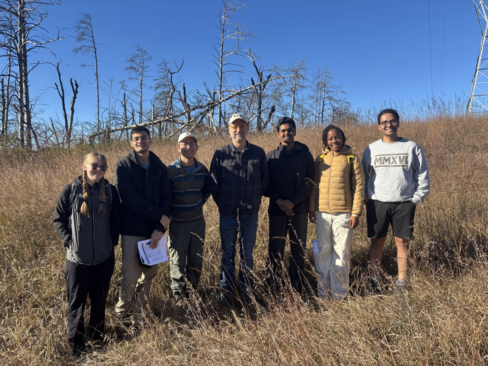
Navigate to any section